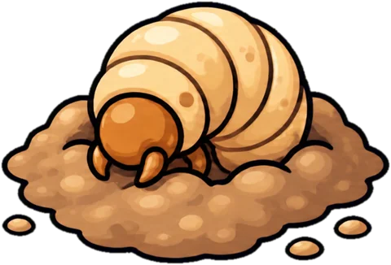

Tap a stage to read its story.
Scarabtiny lives almost entirely underground in the sandy gravel of Granite Heights, only its rounded pale head visible as it peeks above the pebble line. It is a patient digger, inching through compacted granite-sand grain by grain, and the minerals it swallows slowly change its body chemistry - golden flecks begin to appear under its skin even at this early stage. Guardians searching the heights sometimes spot the tiny divot in the pebbles where it breathes, but by the time they crouch down, it has gone still as a stone.
Field note: Scarabtiny ingests an estimated twelve grams of granite mineral per day, slowly gilding its interior.
Granite Heights. Scarabtiny and its family are found in the Granite Heights. See everyone who lives there.
Share a Bond Food that matches its types to become friends. Scarabtiny loves:
A Bond Food is not a trick. It joins your spirit with the Kimuro's spirit, and only when it chooses you.
Print the Kimuro adventure packs: mazes, cards, a board game and Bond Mark medals.
See the printable packs